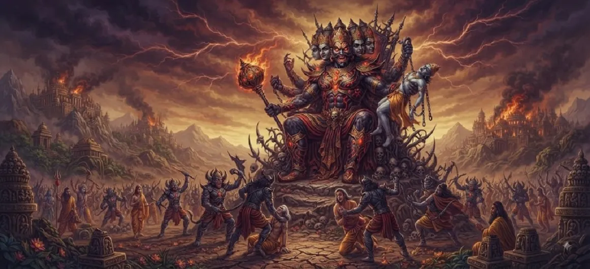

The Tyranny of Tārakāsura
The second chapter of the Kumara Khanda delves deep into the oppressive reign of the demon king Tārakāsura. With unmatched arrogance and terrifying might, he subjugates the three worlds, turning celestial joy into pervasive sorrow.
Sacred rituals are halted, sages are persecuted, and the entire cosmic balance is violently overturned under his demonic governance.
Chapter 2 Highlights
Demonic Supremacy
Tārakāsura crowns himself lord of the worlds.
Disruption of Yagnas
Sacred offerings and rituals forcefully stopped.
Fall of Celestial Forts
Indra's capital and divine abodes seized.
Persecution of Sages
Dharma and righteous scholars targeted.
Cosmic Eclipse
Light and truth eclipsed by adharma.
Cries for Justice
The universe begs for divine liberation.
Core Topics in This Chapter
- 01Unbridled Oppression Across the Three Worlds→
- 02Suppression of Vedic Rituals and Sacrifices→
- 03The Disgrace and Flight of the Devas→
- 04The Boundless Arrogance of Tārakāsura→
- 05The Plight of Sages and Ascetics→
- 06The Universal Plea for a Liberator→
- 07Transition to Chapter 3 (The Boon of Tārakāsura)→
Unbridled Oppression Across the Three Worlds
Tārakāsura establishes an iron-fisted rule over heaven, earth, and the nether regions. No living being dares to challenge his authority, and fear becomes the governing emotion of existence.
Justice is entirely replaced by the whims of the demon king.
Suppression of Vedic Rituals and Sacrifices
To starve the gods of their sustaining power derived from yagnas, Tārakāsura systematically bans all holy sacrifices, fire oblations, and spiritual gatherings across the realm.
Sacred altars are desecrated, plunging the cosmos into spiritual famine.
The Disgrace and Flight of the Devas
Indra and the other deities are stripped of their majestic status and forced to abandon Amravati, wandering in disguise through forests and mountains to escape the demon's wrath.
Their once-glorious pride is replaced by bitter humiliation.
The Boundless Arrogance of Tārakāsura
Blinded by his hard-won boons, Tārakāsura believes himself invincible and eternal. He mocks the divine laws of the cosmos, declaring himself the supreme ruler of all creation.
His hubris sets the stage for his ultimate downfall.
The Plight of Sages and Ascetics
Rishis, munis, and devoted seekers find their hermitages disturbed and their penances interrupted by demon armies. Peace-loving ascetics are subjected to relentless harassment.
Spiritual life in the universe faces an existential threat.
The Universal Plea for a Liberator
As suffering reaches its absolute peak, collective prayers rise from every corner of existence. The universe calls out for the divine son promised to deliver them from this demonic tyranny.
Hope clings to the destined savior.
Transition to Chapter 3 (The Boon of Tārakāsura)
Having witnessed the full extent of Tārakāsura's tyranny in Chapter 2, the narrative now traces back to understand the exact nature of the boons that made him so powerful.
The next chapter reveals how he attained such formidable invincibility.
Key Teachings of Chapter 2
Destructive Rule
Adharma causes widespread suffering.
Targeting Sacrifice
Suppressing rituals weakens cosmic sustenance.
Ephemeral Power
Tyranny built on ego is short-lived.
Resilience of Sages
True spirituality endures oppression.
Inevitable Retribution
Extreme injustice invites divine correction.
Yearning for Light
Darkness makes the dawn more precious.
Spiritual Reflection
The tyranny of Tārakāsura represents the internal ego and ignorance that often overpowers our higher spiritual nature. When worldly attachments and negative tendencies suppress our inner light, we must invoke divine grace to restore inner peace and righteousness.
Living the Message of Chapter 2
Resist the temptation to let ego and arrogance dictate your actions over humility and righteousness.
Protect your spiritual practices and daily mindfulness even when external distractions try to disrupt them.
Maintain hope and patience during difficult phases of life, trusting in ultimate cosmic justice.
Key Spiritual Concepts
The oppressive empire established by demonic forces over the cosmos.
The malicious disruption of sacred sacrifices and spiritual rites.
The blinding rage and arrogance born from unchecked ego.
The defeat, humiliation, and exile suffered by celestial beings.
The widespread spread of unrighteousness and moral decay.
The deep spiritual yearning for ultimate freedom from bondage.
Chapter Summary
Kumara Khanda Chapter 2 details the ruthless tyranny of Tārakāsura, highlighting the suppression of Vedic rituals, the exile of the Devas, and the widespread suffering that necessitates divine intervention.
Frequently Asked Questions
1. What is the primary focus of Kumara Khanda Chapter 2?
Chapter 2 focuses on the ruthless tyranny and oppression unleashed by the demon king Tārakāsura across the three worlds.
2. How did Tārakāsura affect the spiritual practices of the universe?
He disrupted sacred rituals, halted sacrifices, and persecuted sages, plunging the cosmos into spiritual darkness.
3. Why were the gods unable to stop Tārakāsura's tyranny directly?
Tārakāsura possessed extraordinary power and protection that rendered ordinary celestial weapons and defenses futile.
4. What is the next chapter after Chapter 2?
The next chapter is titled 'The Boon of Tārakāsura'.
“When tyranny reigns and adharma tries to eclipse the cosmos, the cries of the oppressed inevitably summon the awakening of supreme divine justice.”
Continue Through Kumara Khanda
Chapter 2 details Tārakāsura's tyranny. Continue to the next chapter, The Boon of Tārakāsura.